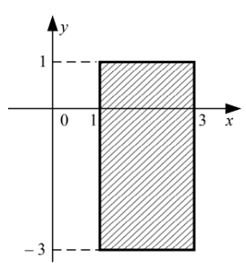

Справочник по Python · модуль 2 · условия
Глава 2.3
Двойное сравнение.
Проверка диапазона
Чтобы проверить, находится ли значение между двумя границами, Python позволяет собрать два сравнения в одну цепочку. Такая запись короче и читается почти как математическое неравенство.
«Разбираться в основах — значит экономить время в будущем.»
- Категория
- Условия и сравнения
- Уровень
- Начальный
- Связанные темы
- Операторы сравнения, and, координаты
- Зачем это знать
- Проверять интервалы без повторения переменной
§1Цепочка сравнений
Запись a <= x <= b проверяет сразу две границы: x не меньше a и не больше b.
a <= x <= b
# то же условие в развёрнутом виде
a <= x and x <= b
Python проверяет оба сравнения. Результат будет True, только если значение проходит левую и правую границу.
§2Включённые границы
Знаки <= и >= включают крайние значения в диапазон.
print(1 <= 1 <= 3) # True print(1 <= 2 <= 3) # True print(1 <= 3 <= 3) # True print(1 <= 4 <= 3) # False
Так проверяют возраст, допустимую температуру, координату, процент выполнения и любое значение с нижней и верхней границами.
§3Строгие границы
Знак < исключает границу. Знаки в одной цепочке можно комбинировать.
| Запись | Какие значения подходят | Границы |
|---|---|---|
1 <= x <= 3 | от 1 до 3 | обе включены |
1 < x < 3 | между 1 и 3 | обе исключены |
1 <= x < 3 | от 1 до 3 | 1 включено, 3 исключено |
1 < x <= 3 | от 1 до 3 | 1 исключено, 3 включено |
§4Правильный порядок
Удобнее записывать границы слева направо по возрастанию: меньшая граница, переменная, большая граница.
minimum <= value <= maximum
Запись maximum >= value >= minimum тоже работает, но читать её труднее. Не смешивайте направления: условие 1 <= x >= 3 означает «x не меньше обеих границ», а не «между 1 и 3».
§5Точка в прямоугольнике
Точка (x, y) находится в заштрихованной области, если её координата x попадает от 1 до 3, а y — от −3 до 1. Границы входят в область.

1 <= x <= 3 and -3 <= y <= 1
Здесь две цепочки сравнений соединены оператором and: точка должна одновременно подходить и по горизонтали, и по вертикали.
§6Полная программа
x = 2 y = 0 inside_x = 1 <= x <= 3 inside_y = -3 <= y <= 1 inside_area = inside_x and inside_y print(inside_area)
True
Имена inside_x и inside_y показывают, какая именно координата прошла проверку. Это особенно удобно при поиске ошибки.
§7Когда одной цепочки мало
Цепочка описывает один непрерывный диапазон. Если подходят два раздельных диапазона, нужны два условия и or.
temperature = -12 is_extreme = temperature < -10 or temperature > 35 print(is_extreme) # True
§8Частые ошибки
| Что написано | Что произойдёт | Как правильно |
|---|---|---|
1 <= x >= 3 | проверяется, что x не меньше обеих границ | 1 <= x <= 3 |
x >= 1 or x <= 3 | условие истинно почти для любого числа | x >= 1 and x <= 3 или цепочка |
1 < x < 3, когда края подходят | значения 1 и 3 будут исключены | 1 <= x <= 3 |
1 <= x <= 3 and -3 <= 1 | во второй проверке потеряна переменная y | 1 <= x <= 3 and -3 <= y <= 1 |
§9Проверьте себя
Что означает 0 <= score <= 100?
Значение score находится от 0 до 100 включительно.
Как проверить диапазон от 10 включительно до 20 не включительно?
10 <= value < 20.
Попадает ли точка (3, -3) в область из примера?
Да. Обе координаты лежат на включённых границах.
§10Шпаргалка
a <= x <= ba < x < ba <= x < ba <= x <= b and c <= y <= dИтог главы
Цепочка сравнений проверяет нижнюю и верхнюю границы одной записью. Знаки < и <= определяют, входят ли края в диапазон. Для двух независимых величин, например координат, составьте две цепочки и соедините их через and.